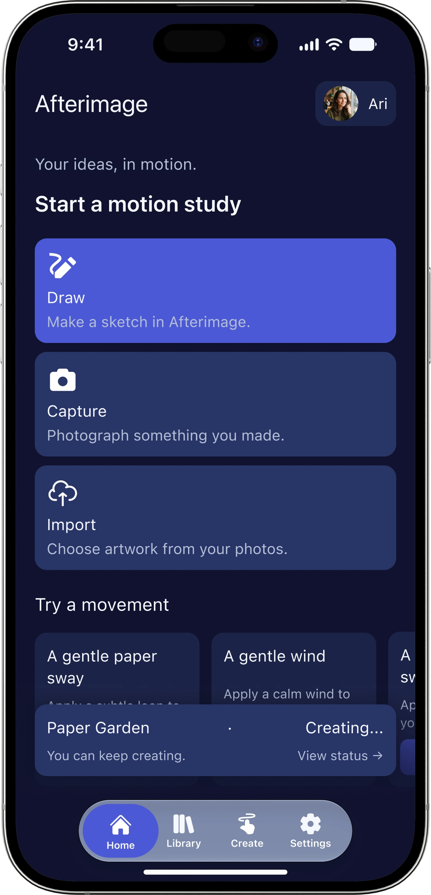
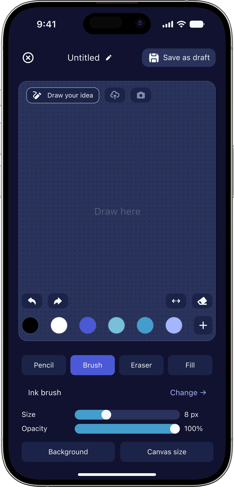
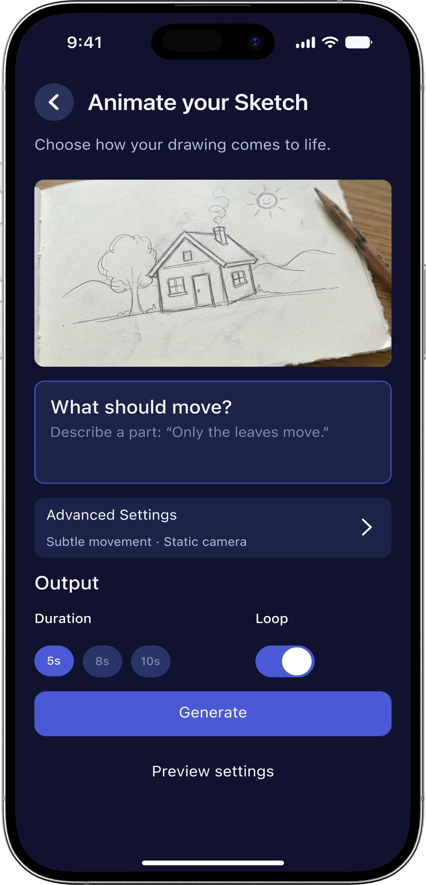
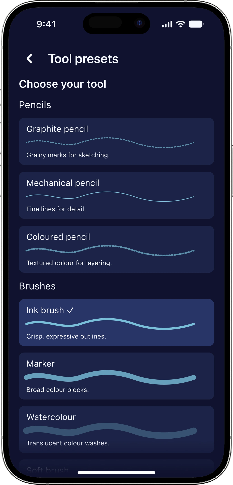
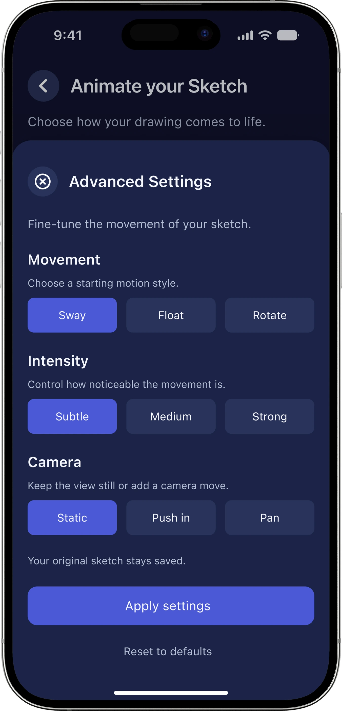
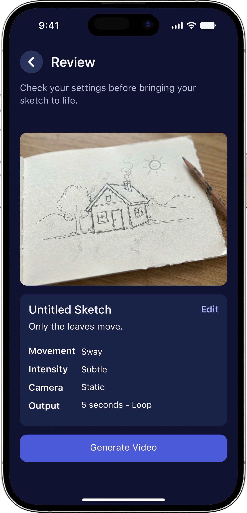
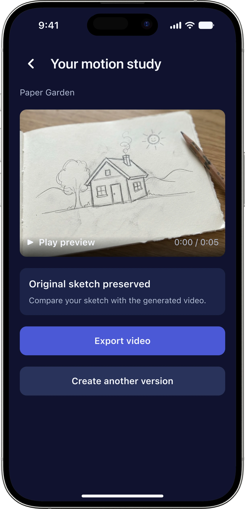
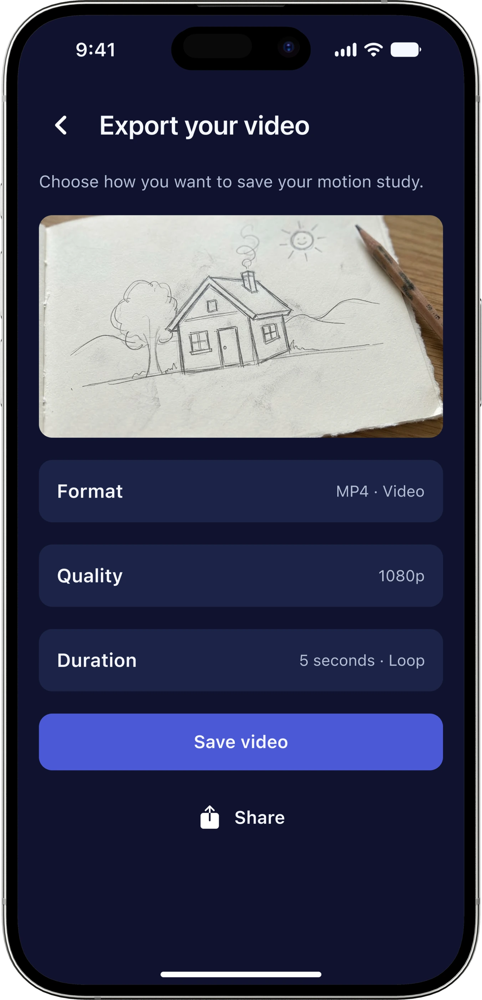
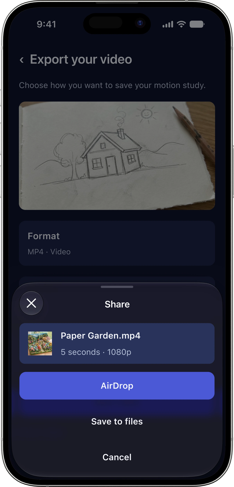

AFTERIMAGE · INDIVIDUAL PROJECT
Handmade ideas.
A new life
in motion.
Your sketch is the starting point. Afterimage explores how your own artwork can become a short AI-assisted motion study.
MY ROLE
UX/UI Designer
MY FOCUS
UX/UI Design
CONTEXT
App Design
WHEN
October, 2025
> 01 / THE STARTING POINT
What if AI started
with something
you already made?
I aimed to help creators animate a sketch, collage or photograph without overwhelming the first step.
I designed the app concept, user flow, creative tools and UI components.
> 02 / INTRODUCTION TO THE APP
3 Different ways
to start a creative journey.
01 / Draw ↗
Start from a blank canvas. Make a quick sketch of your idea and start your journey.
02 / Capture ↗
Bring paper into the picture. Photograph something you made and animate it.
03 / Import ↗
Start with an existing image. Explore motion without replacing the original artwork.

> 03 / MAKE
Your canvas.
Your starting point.
The home screen places Draw, Capture and Import first. It asks where the artwork comes from before asking how it should move.
Organise the first screen around creative actions.
> 04 / CREATE
Stay close
to the sketch.
Brush presets, colour, size and opacity sit beside the canvas. A draft can be saved before moving into animation settings.
Keep making and editing in one workspace.


> 05 / DIRECT
A little direction.
A new possibility.
“Only the leaves move.” A simple instruction addresses what should move; duration and loop define the output.
Make the first motion choice specific and approachable.
> 06 / THE KEY ITERATION
Less on the screen.
More room to create.
I moved movement, intensity and camera controls into an advanced sheet. The main screen stays focused on the motion instruction, duration and loop. Detailed controls take one extra tap, keeping the main screen simple while giving creators more options when needed.
The primary task

Control when you need it

Control when you need it
> 07 / REVIEW
Review the choices.
Keep the next step clear.
Before generating, users can check their settings. The waiting screen gives feedback what happens next, and sharing completes the creation flow.

> 01 / REVIEW
Know what you’re creating.

> 02 / GENERATE
Understand the wait.


> 03 / SHARE
Give the study a next chapter.
> 08 / PROJECT SUMMARY
The artwork stays yours.
The possibilities expand.
My contribution
I developed the concept, creation flow and UI system, including drawing tools, motion settings, review, sharing and supporting states.
The experience
Draw, Capture and Import lead into one motion workflow. The Figma prototype lets creators direct movement while keeping their original artwork as the starting point.